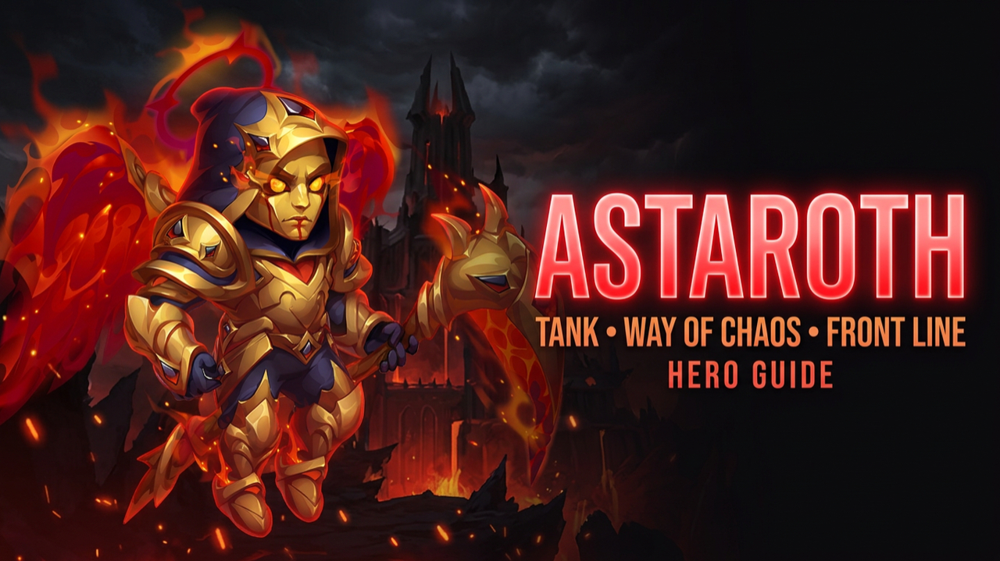

ASTAROTH
Astaroth is a defensive tank built around shielding allies, controlling enemy Energy, redirecting Physical Damage and giving his team a second chance through resurrection.
SURVIVE. PROTECT. RESURRECT.
Astaroth's strength comes from keeping his allies alive. Flame Veil protects the entire team from Physical Damage, Demon's Allegiance redirects damage away from vulnerable allies, and Last Word can resurrect one fallen hero once per battle.
SKILLS
Flame Veil
Astaroth creates a shared shield that protects every ally from Physical Damage. All absorbed damage is taken from the same shield pool. The strength of Flame Veil scales with Astaroth's Magic Attack.
Devastation
Astaroth unleashes hellfire that burns away a large percentage of the Energy accumulated by the furthest enemy. The ability does not scale with his stats; its effectiveness depends on skill level.
Demon's Allegiance
When an ally reaches the lowest Health on the battlefield, Astaroth begins absorbing a large portion of the Physical Damage that ally receives. The redirected damage is reduced before Astaroth takes it.
Last Word
Once per battle, Astaroth resurrects a fallen ally or himself. The strength of the resurrection scales with his Magic Attack, giving the team another opportunity to recover from a critical elimination.
KEY SYNERGIES
AIDAN
Aidan can continuously increase the maximum Health of allied heroes through Phoenix's Ritual and Bonds of Fire, helping the team survive longer alongside Astaroth's defensive protection.
XE'SHA
Xe'Sha can permanently increase her own Magic Attack and share a large portion of it with teammates through Spiritual Power. Because Flame Veil scales with Magic Attack, this can significantly strengthen Astaroth's shield.
SKINS
Highest priority for improving Astaroth's ability to withstand Physical Damage on the front line.
Completes his defensive profile by improving survivability against powerful magical compositions.
A larger Health pool improves his overall durability against every composition.
Adds another major layer of raw survivability.
Strength improves Astaroth's main stat and contributes to his overall durability.
Improves Flame Veil and Last Word, but defensive development remains the higher priority.
Future skins: another Armor or Magic Defense Skin would immediately become one of Astaroth's highest development priorities.
GLYPHS
The primary defensive priority for a frontline tank absorbing heavy Physical Damage.
Allows Astaroth to withstand dangerous magic teams as well as physical compositions.
Adds general durability and gives Astaroth more time to activate his defensive abilities.
Improves his main stat while providing additional survivability.
Strengthens Flame Veil and Last Word, but remains behind Astaroth's defensive stats.
Progression: bring every Glyph to around Level 40 before pushing them significantly higher unless you are working toward Hero Class progression.
ARTIFACTS
BOOK
Provides Armor and Magic Defense — Astaroth's two most important defensive stats — making it the highest Artifact priority.
RING
Increases Strength, improving Astaroth's overall durability throughout longer battles.
WEAPON
Grants an Armor bonus to the entire team whenever Astaroth casts Flame Veil, adding another layer of protection against physical compositions.
GIFT OF THE ELEMENTS
MAX IT OUT
Prioritize bonuses that improve Astaroth's survivability, especially Armor and Magic Defense. He needs to remain on the battlefield long enough to protect allies, redirect damage and activate his resurrection when it matters.
TALISMANS
Balanced Defense
Provides a balanced defensive profile by combining Astaroth's main stat with additional protection against magical damage.
Raw Durability
Provides strong raw durability through additional Health and Armor. Both Talismans can perform exceptionally well depending on the opposing composition.
ASTAROTH COUNTERS
MORRIGAN
Necromancy prevents Last Word from activating, denying Astaroth's resurrection mechanic.
DRAYNE
Heroes defeated by Drayne cannot be resurrected, preventing Last Word from bringing them back.
IRIS
Enemies executed by Iris cannot be revived, preventing Astaroth from reversing those eliminations.
ASTRID AND LUCAS
When Astrid is positioned at the very back, she can avoid Astaroth's Energy burn while Lucas pressures the frontline and the allies Astaroth is protecting.
CELESTE
Dark Flames prevent healing and convert it into Magic Damage, reducing the value of Health restored after Last Word activates.
OYA
Oya specializes in destroying enemy shields, allowing her to directly pressure the protection provided by Flame Veil.
ASTAROTH GIVES HIS TEAM ANOTHER CHANCE TO WIN.
Astaroth combines team shielding, Energy control, Physical Damage redirection and resurrection. His value does not come from dealing enormous damage — it comes from surviving long enough to keep the rest of the team alive and functioning.